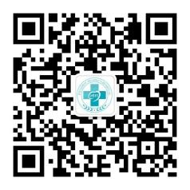

尊敬的患者朋友：您好！
首先感谢您对我院的信任与支持，为配合做好我院医疗服务工作，务请您及亲属了解：
一、 预约
为减少等候时间，建议通过下列方式预约就诊：网上预约www.wzsrmyy.com（温州市人民医院）、www.51gh.net（温州挂号网）；电话预约（88883131、88059166、12580、114）；现场预约（医师、各分诊台及门诊服务中心、自助服务机）；微信预约（关注微信号：wzsrmyy1913，可以预约、报到、预存，并可查询候诊排队号、三月内报告单、医院导航、就医指南、特色科室、医生停诊信息等）；支付宝（下载支付宝钱包客户端，添加朋友--服务窗，在搜索服务窗处输入“温州市人民医院”，在搜索结果里点击添加然后查看或扫描添加支付宝服务窗，打开支付宝，点击“扫一扫”扫码添加“温州市人民医院”服务窗。请根据提示进行个人建档、绑定就诊卡及门诊预存操作。支付宝有智能导诊；预约挂号；门诊预存；住院预缴；预存缴清单查询；检查检验结果查询；住院费用查询；医院简介、就诊指引查询；本院技能中心培训课程预约等功能）。
二、实名
我院实行实名就诊，请携带本人病历及就诊卡就诊；初诊患者凭身份证在收费处或自助服务机建卡、预存。未带身份证者请到预检分诊台填写“挂号预填单”在收费处建卡。注意患者姓名必须与身份证相符。如因填写内容不真实、不准确引起的纠纷或不能报销后果自负。请确保手机号码正确及畅通，以便接收就诊信息。
三、预存
我院实行实名预存就诊，请足额预存，预存后医生开取检查、化验、药物后可直接诊间结算，直接帮您预约检查的时间，避免多次排队缴费与到窗口预约。预存方式：自助服务机、收费窗口均可现金、银联储蓄卡转账；微信、支付宝均可绑定就诊卡预存；；普通门诊至少预存20元，特需门诊至少预存60元。医生就诊刷卡时按接诊医生的职称收取挂号费。如需打印正式发票可至各楼层收费处。

四、签到、挂号
有卡者直接到自助服务机签到、预存、挂号、打印排队签；卡内余额足够者可直接到护士分诊台签到；无卡者请携有效证件及手机号码提前20分钟到收费窗口预存、签到、挂号。签到后系统会自动排队。
五、候诊
我院已开通电子叫号排队系统，请您在预存时确认就诊科室与医生，直接进入排队系统。然后到相应候诊区等侯，当显示屏呼叫并显示名字时再进入诊室就诊。如发现预存号与就诊科室或医师不符时请到相应分诊台更改。如需就诊建议（选择科室与医生），可参照门诊大厅显示的专家介绍或关注我院微信服务号wzsrmyy1913或自助服务机上查询选择，亦可咨询各服务台。
六、就诊
就诊完毕医生会打印就医指南：显示本次就诊费用及需要做的检查、化验、取药等项目名称、楼层位置。处方3天有效。
七、取药
西药、中药请到10幢1楼大厅，根据医生打印的就医指南或收费处打印的发票或自助服务机打印的缴费凭证或发送的短信上显示的取药窗口，当药房窗口上方显示屏上出现您的名字时再到相应窗口排队，依次取药。中西药房工作时间：(7月、8月)7：30～17:30，其他时间8:00～17:30，急诊西药房在5幢1楼24小时开放。
八、注射、输液
新输液中心在10幢2楼，静脉输液：7：30--16：00；皮试、肌注、疫苗等：7：30--17：00
老输液中心在5幢2楼。静脉输液：16：00--次日7：30；皮试、肌注、疫苗等：16：00--次日8：00
九、门诊服务
10幢1楼的门诊服务中心为您提供：各种咨询和就诊指导；现场预约；健康宣教、发放相关资料；发放、代寄化验单；提供针线、信封、笔、纸、老花镜、饮用水及杯子；物品保管、失物登记及招领；协助办理住院手续；出借轮椅；医疗证明盖章、登记；收集门诊患者意见；身份证复印等服务。您如有困难请直接与门诊服务中心或幸福志愿站人员联系。
十、费用查询、退费
凭就诊卡可在自助服务机查询您就诊的各项费用。所有自助服务机可以物价查询，10幢1楼大厅显示屏播放我院各种药品价格和检查治疗项目收费。就诊后多余的钱在就诊卡内永久有效，如确需将就诊卡内的钱取出，请携带建档时的有效证件到收费窗口办理，证件可在门诊服务中心复印。
十一、乘车路线
医院地址：温州市仓后57号 邮政编码 325000
公交到达路线：
可乘坐2、4、5、8、10、快10、15、21、26、55、58、59、65路公交车至温州大厦；
1、31、103、108、113、68路公交车至府前街；
38、44、45、46、87、90路公交车至松台广场站，均离医院约步行三五分钟的路程。
十二、相关电话
咨询电话：0577－88059889 0577-88059666 投诉电话：0577－88059907
急诊电话：0577－88063120 预约电话：0577－88059166 0577--88883131
医院网址：www.wzsrmyy.com；微信订阅号wzsrmyy服务号wzsrmyy1913
您的健康是我们的心愿，祝您早日康复!
★详细流程可查阅就医流程
楼层分布图：
| 10幢楼层导向 |
| 1楼 |
门诊服务中心 西药房 中药房 放射影像科 幸福志愿站 收费窗口 医保窗口 |
| 2楼 |
内科门诊 外科门诊 康复科门诊 临床营养中心 换药室治疗室 方便门诊 门诊化验室 输血科 注射室 输液中心 收费窗口 |
| 3楼 |
妇科门诊 中医妇科门诊 皮肤科门诊 妇科疾病治疗中心 妇产科超声 收费窗口 |
| 4楼 |
产科门诊 生殖医学中心（妇科内分泌、不孕不育） 名医馆 儿科门诊 新生儿科门诊 眼科门诊 收费窗口 |
| 5楼 |
耳鼻咽喉科门诊 中医科 针灸推拿科 理疗 超声医学科 消化内镜中心 气管镜室 肺功能室 温州市区域心电中心 心电功能科 麻醉科门诊、疼痛门诊 收费窗口 |
| 6楼 |
医学检验中心 温州市病理检验中心 病理科 |
| 7楼 |
麻醉手术部 |
| 8楼 |
静脉用药调配中心 消毒供应中心 |
| 9楼 |
二十病区新生儿科 分娩中心 病区妇产科超声 |
| 10楼 |
二十一病区 产科一（VIP病房） |
| 11楼 |
二十二病区 产科二 |
| 12楼 |
二十三病区 产科三 |
| 13楼 |
二十四病区 产科四 |
| 14楼 |
二十五病区 综合妇产科 |
| 15楼 |
二十六病区 妇科一 |
| 16楼 |
二十七病区 妇科二（生殖内分泌） |
| 17楼 |
二十八病区 妇科三 |
| 3幢楼层导向 |
| 一层 |
急诊化验室 |
| 二层 |
泌尿结石诊治中心 |
| 三层 |
心理科 脑电图室、动态脑电图 肌电图室、 脑诱发电位室 |
| 5幢楼层导向 |
| 一层 |
急诊医学科（分诊、抢救室、观察室、急诊重症监护室EICU） 急诊（内科、外科、妇产科、儿科、眼科、口腔科、耳鼻咽喉科） 急诊药房、急诊B超、肠道门诊、急诊犬伤门诊、隔离室 |
| 二层 |
注射室（静脉输液：16：00--次日7：30；皮试、肌肉、疫苗等：16：00--次日8：00）一病区（急诊观察病房） |
| 三层 |
职业健康体检部 |
| 6幢楼层导向 |
| 一层 |
急诊拍片室 健康体检登记处 |
| 二层 |
职工餐厅 |
| 三层 |
职业健康体检部 |
| 四层 |
门诊部办公室 监察审计室 服务质量管理办公室 门诊预约室 电话回访室 医保办 |
| 五层 |
医务科 护理部 质管科 保卫科 信息科 |
| 六层 |
会议室 |
| 备注 |
6幢2F、3F可过连廊到达3幢与5幢的2F、3F |
| 门诊其他科室导向 |
| 新国光2楼 |
母婴健康中心（儿童保健科门诊、产后随访门诊） |
| 8幢4楼 |
整形外科（从1幢4楼过天桥到8幢4楼西边诊室） |